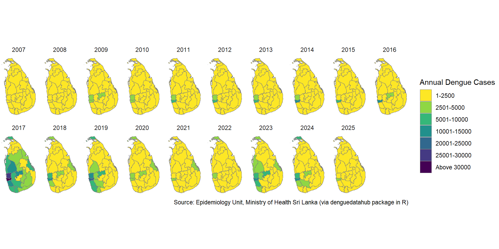
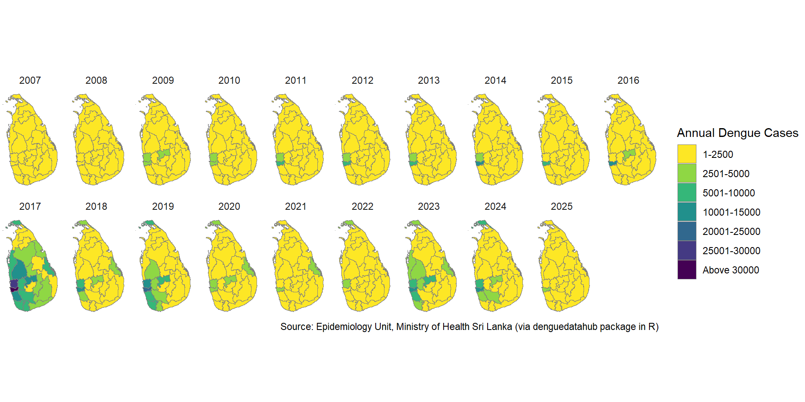

Spatial Distribution of Annual Dengue Cases by Districts
Figure 3: Tile Map of Annual Dengue Cases by Districts
Note: 2025 results were reported only upto week 11 yet.

Figure 3: Tile Map of Annual Dengue Cases by Districts
Note: 2025 results were reported only upto week 11 yet.